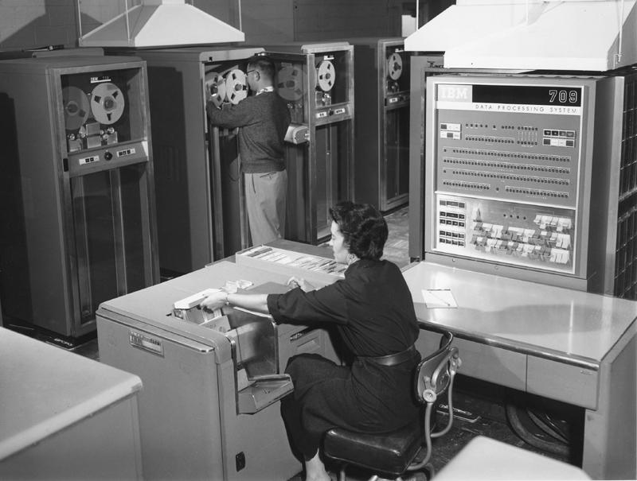

本讲概述
困惑：为什么需要 AbstractMachine?
- 复杂系统的构造与解释
- 理解计算机系统
- 代码导读
深受折磨的《计算机系统基础》
来上《计算机系统基础》的初衷
你是否困惑，“学这个东西到底有什么用”？
- 你是否用 “总有用的” 来麻痹自己？
- 你是否为考了 90 分/考过了/...沾沾自喜？
- 你认为你是扎实地掌握了内容，还是一过即忘的应试？
John Hopcroft (1986 Turing Award, with Robert Tarjan)
- Hopcroft-Karp Algorithm, $O(E\sqrt V)$ 二分图匹配
- 中国本科生教育并没有为研究型博士创造出足够的高质量申请人
- 中国高校过于注重国际声望，把经费和论文数量作为重要的衡量指标
- 高质量本科生数量远远无法达到社会需求
让时间回到 1974 年……
世界上第一台 PC (Altair-8800, Intel 8080)
- Intel 8080 Manual
- 有它，就有整个世界
- 就像你们在 PA2 里体验的那样
- Simple, but not simpler


就在几乎同时……

Bill Gates 从 Harvard 退学，创建 Microsoft (1975)
- 这是耳熟能详的故事
Bill Gates 和 Paul Allen 在 PDP-10 上实现了 Altair 8800 的全系统模拟器和 BASIC 解释器
- 成就了 PC 的传奇
- 没有软件，硬件毕竟只是一堆烂铁
我们花了 40 年追上了 Bill Gates 的脚步
我们应该高兴？高兴？还是高兴？
我们的 modernize 还有很长的路要走
- 包括《计算机系统基础》
- 必须以 “融会贯通” 的标准要求大家
- “混个眼熟，以后再学” $=$ 自欺欺人
计算机系统的构造与解释
《计算机系统基础》里的三要素
代码
- hanoi-r.c; 非递归版本 hanoi-nr.c
指令集
- x86-64, RV32IM, ...
电路
- 逻辑门、导线、触发器
代码 (C) → 指令集 → 逻辑门 (计算机)
这也太难了吧
复杂中隐藏的秩序
理解/构造一个复杂系统 (操作系统/处理器/航母)？
- USS Midway (CV-41); 1945 年首航，“沙漠风暴” 行动后退役
- 舰船配置；资源管理/调度；容错……
复杂中隐藏的秩序 (cont'd)
航母不是一天造成的。

复杂中隐藏的秩序 (cont'd)
采矿船继承了航海时代的设计。

复杂中隐藏的秩序 (cont'd)
复杂系统的演化通常是 evolutionary 的而不是 revolutionary 的。
无法第一次就设计出 “绝对完美” 的复杂系统
- (因为环境一直在变)
- 例子：bash v.s. PowerShell
实际情况：从 minimal, simple, and usable 的系统不断经过 local modifications (trial and errors)
- 计算机硬件
- 操作系统
- 编译器/程序设计语言
- 需求和系统设计/实现螺旋式迭代
A New Approach to ICS
(以及 jyy 的消失)
在计算机诞生之前……
我们可以用逻辑电路搭计算器
- 我们可以分成 core, uncore, ...

把计算器变成计算机
只需要两条指令和一个编译器
00000000 :
0: 00100513 li a0,1 # R[a0] <- 1
4: 04800593 li a1,72 # R[a1] <- 0x48 ('H')
8: 00100073 ebreak # hyper-call(a0, a1)
c: 06900593 li a1,105 # R[a1] <- 0x69 ('i')
10: 00100073 ebreak
14: 00a00593 li a1,10 # R[a1] <- 0x0a ('\n')
18: 00100073 ebreak
1c: 00200513 li a0,3 # R[a0] <- 3
20: 00100073 ebreak
- 回顾：代码 (C) → 指令集 → 逻辑门 (计算机)
von Neumann 计算机
可以把状态机的形态保存在存储器里，而不要每次重新设置。(存储程序的通用性真正掀起了计算机走向全领域的革命。)

我们还需要什么？
你们在《计算机系统基础》中学习的机制
- I/O + 中断 = 丰富的应用
- 中断 + 更大的内存 = 分时多线程
- 分时多线程 + 虚拟存储 = 进程
- 多处理器
- ……
AbstractMachine 的设计取舍
提供
- TRM (程序所需最小的运行环境)
- IOE (仅提供一些系统无关的设备抽象)
- CTE (简化、统一、相对低效的中断处理)
- VME (基于页的映射，忽略硬件实现)
- MPE (假设 race-freedom、简化的系统模型)
我们的设计做了怎样的取舍？
- 得到：统一简洁的接口
- 适合教学；跨体系结构存活 (甚至有 native)
- 失去：实际系统的特性支持
- 不连续的内存、热插拔内存、Access/Dirty Bit……
代码导读
Makefile
Make 是大家接触的第一个 build system
- Classic
- GNU Make (有人问起过 CMake)
- Modern
- Markdown + Doc comments (
#的使用)
- Markdown + Doc comments (
下一步？
为什么指定了 ARCH，就可以编译出一个目标平台的可执行文件？
- RTFSC? RTFM?
一切皆程序 (command-line shell; makefile; ...)
- 理解程序有两种方法：静态 v.s. 动态
- 我们可以看执行的
trace ！- 《计算机系统基础》处处是彩蛋
- 我们可以看执行的
计算机系统的一切在此刻不再神秘 (
$ make -nB \
| grep -ve '^\(\#\|echo\|mkdir\|make\)' \
| sed "s#$AM_HOME#\$AM_HOME#g" \
| sed "s#$PWD#.#g" \
| vim -
总结
树立一个 “标准”
困难的东西总是存在简单的解释
- 简单 $\ne$ trivial
- 简单 $\ne$ 舒适
- 简单 $\ne$ 内卷
- 简单 $=$ 专业的训练和素质
- 简单 $=$ 痛苦的折磨
这才是你们要上的大学
Real power can't be given. It must be taken. ——Godfather
八卦 (1): PA 的由来
yzh 觉得……好像只有 OS 不够劲啊
- 而且 OSLab 上来就把 x86 的手册丢给你好像不太好玩
那就让大家好好读读 x86 手册吧……那……
- 就做个模拟器好啦，反正就是照着手册写一遍的事
- 于是就有了 PA: 简易 x86 全系统模拟器
- 目的是让大家知道“什么是计算机”
八卦 (2): PA 的后续
觉得虽然体系里的确什么都有了，但还是不够劲啊，不如玩个大的？
上面跑自己的 OS
上面跑自己编译器编译出来的应用程序
应用程序可以是 NEMU
NEMU 又跑自己的 OS……
八卦 (3): PA 的后续
RISC-V 恰如其时地出现了
是时候革了《计算机系统基础》的命了
- 代码-指令-硬件
- (做好跳票准备)
End.
Happy Hacking!